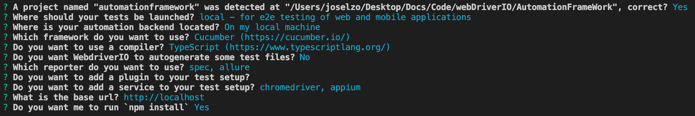

- download node version mannager
- nvm documentation
- - use the following command to install nvm:
- curl -o- https://raw.githubusercontent.com/nvm-sh/nvm/v0.39.2/install.sh | bash
- nvm commands
- - nvm install 16---install node version 16
- - nvm use 16-- use node version 16
- - nvm list-- list of node version installed
- - node -v-- node version active
- - default version of node: nvm alias default version
- Install brew
- - install brew
- install java (brew creates java_home automatically)
- ejecute: brew install java
- close you terminal
- check java variables: java-version
- download xcode from app store
- install xcode command line tool: xcode-select --install
- accept and continue (installation takes long time)
- install carthage (dependency mannger for iOS)
- brew install carthage
- Install appium in console: npm install appium@next
- install appium desktop
- Install appium inspector
- Install appium server
- install appium doctor (checks missing dependencies)
- Documentation
- execute: npm install @appium/doctor -g
- execute: appium-doctor --ios // android
- install xcuit test (driver for ios)
- check drivers installed: appium driver list
- install xcuit: appium driver install xcuitest
- create and configure your project (change configuration depending on the type of project)
- inside your project folder type: npm init
- follow npm instruction inside the console
- wdio documentation
- install wdio: npm init wdio .
- for this tutorial use the following config

- Make sure that in your wdio conf file is in the main path, inside the file, runner section, the config file should be the same path
- make sure that you have the following structure for cucumber test, test/step-definitions
- in the wdio config file, specs should have the path in where the features file will be executed
- in cucumber options add the path in where the steps definition file will be executed
- to handle different plugins add a helper folder inside the test folder
- add a demo folder/step-definitions inside test in order to debug feature filess
- add a page-object folder inside test for get the page elements
- create a config folder in the main path to add more than one configuration to run different environments
- create a data folder in the main path to store different data
- create a debug folder in the main path to handled isolated debugs from the project
- create a logs folder in the main path
- a folder result in the main path to get all the test results (you can compare ir with expected folder or values)
- in the main path create .env file to handled secrets and credentials
Common issues
Make sure that your browser version matches with the package.json file version
In order to fix the erro code 65 from appium when you are connecting
go to appium in the aplication folder
with right button "Show package content"
follow the following path content/resource/app/node_modules/appium/node_modules/appium-webdriveragent
download the last version of the webDriverAgent and the runner.zip(keep the file in zip, do not unzip)
webDriverAgent and runner
replace the files content and replace it in the appium-webdriveragent folder
Desire capabilities for appium in iOS
in xcode project properties you can find the bundle identifier capability
in xcode, windows, devices and simulator option you can find the appium udid capability selecting the emulator used